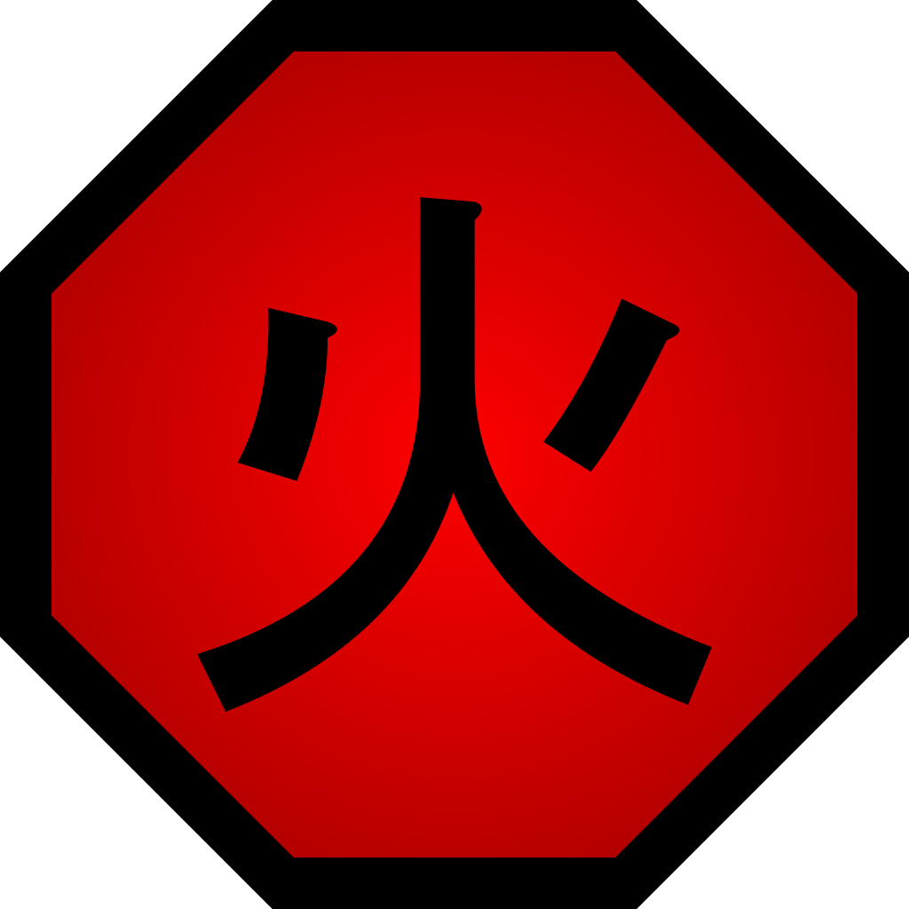
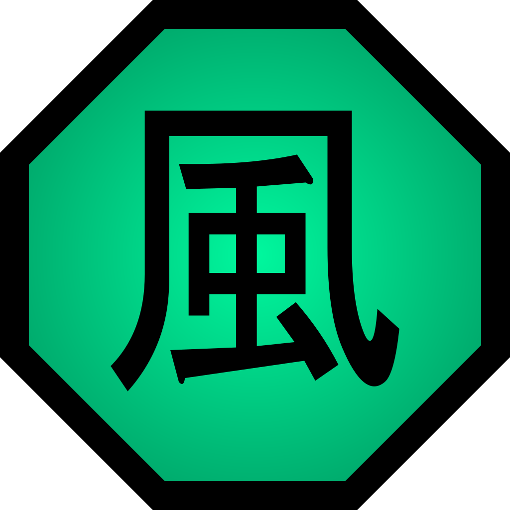
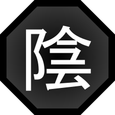
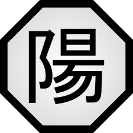

First Name: Kakashi
Last Name: Hatake
Birth Date: September 15
Sex: Male
Hatake Clan
Mangekyo Sharingan
Lightning Release
Earth Release
Water Release
 Fire Release
 Wind Release
 Yin Release
 Yang Release
Since his early childhood, Kakashi was very independent and self-confident,
at times even appearing arrogant and condescending.
Despite that, Kakashi was very perceptive and intuitive,
quickly realising the situation for what it was.
After his father's death, Kakashi became more stern, aloof and cold toward others,
following all the rules to the letter, chastising any who disobeyed them and being
willing to abandon his comrades to finish missions.
As an adult, Kakashi typically has a relaxed and almost bored attitude,
not prone to getting too worked up about anything or by anyone.
Despite his increasingly growing reputation and prowess as a ninja,
Kakashi has shown no signs of arrogance, and is rather modest about his abilities.
He is habitually tardy, showing up when it suits him, using excuses that
convince nobody, and later leaving for equally poor reasons. Though
Kakashi wants others to believe this is how he always acts, he only
does so for matters that aren't of particular importance.
Because he'd lost two teammates in such a short timespan,
his role in Rin's death, and his failure to honour Obito's last
request by protecting her, Kakashi dropped into a depression.
In the anime, many believed he purposely killed Rin to prevent her
from leaking information, earning him the nickname
"Friend-Killer Kakashi". Many, especially those in Anbu believed he
would kill a comrade without hesitation if it was for the sake of
completing the mission.
He would also spend his days avoiding friends and former classmates
and at night he would be haunted by dreams of himself killing Rin
again. Minato, now the new Hokage, tried to help Kakashi emerge from
the darkness he'd fallen into after Obito and Rin's deaths by
assigning him to the Anbu. Kakashi did well in the Anbu,
eventually becoming a captain and the leader of Team Ro. However,
his successes were owed to his cold behaviour and his ruthlessness in
combat, signs that he was still upset by Rin's death. Minato
therefore tried a different tactic: assigning Kakashi to protect
Minato's wife, Kushina Uzumaki, during her pregnancy.
Kakashi carried out his duties faithfully, monitoring Kushina
from the shadows whenever she left her home.During his time off,
he would visit Rin's grave and Obito's engraving to tell them his
regrets and how life was going without them.